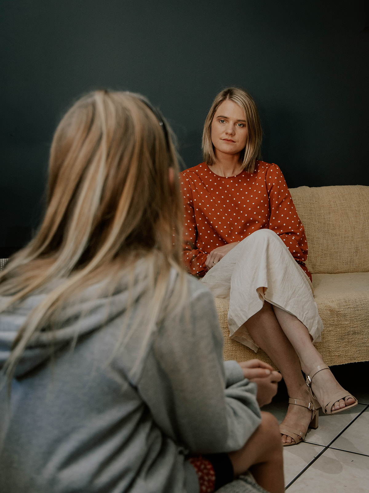

Hi I am Jané
I am a dedicated and professional counsellor who works effectively both independently and within a team. I am a highly organised and efficient individual who approaches each client with positivity, empathy, and perseverance, supporting meaningful growth and lasting outcomes. I am grounded in my roots and values, which guide both my work and relationships. I focus on spiritual, physical and emotional well-being as important pillars in the counselling journey.
I practise a person-centered approach, allowing the client to make their own decisions and discover their own potential through the counselling sessions. The right guidance, supportive structures, and faith as small as a mustard seed, I believe clients can climb even the greatest of mountains.

The youth of South Africa is especially close to my heart. My five years of teaching experience, being a youth worker and school counsellor, have given me valuable insight into the academic pressures, extracurricular demands, and overall stress faced by learners, teachers, and parents. Besides counselling, I also offer study skills guidance and workshops to support learners in navigating these challenges.
I believe it is part of my calling to walk alongside our youth as they grow into resilient, confident, and purposeful individuals.